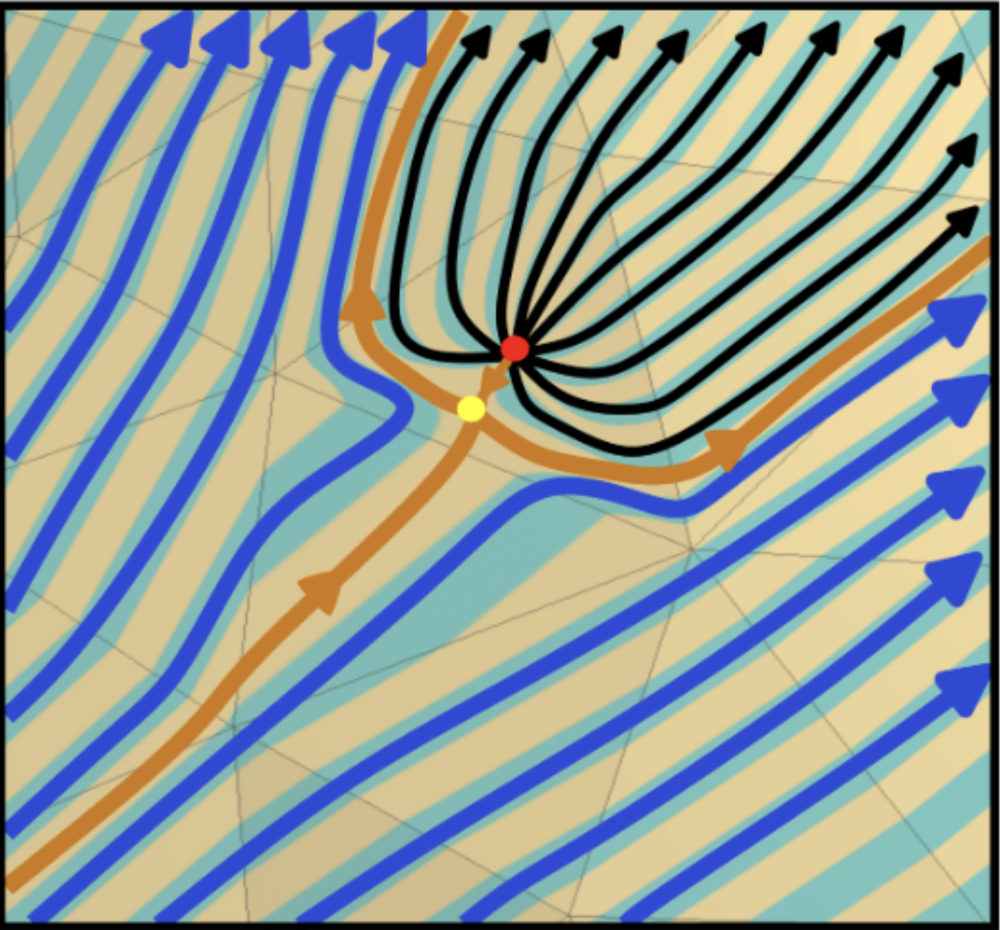
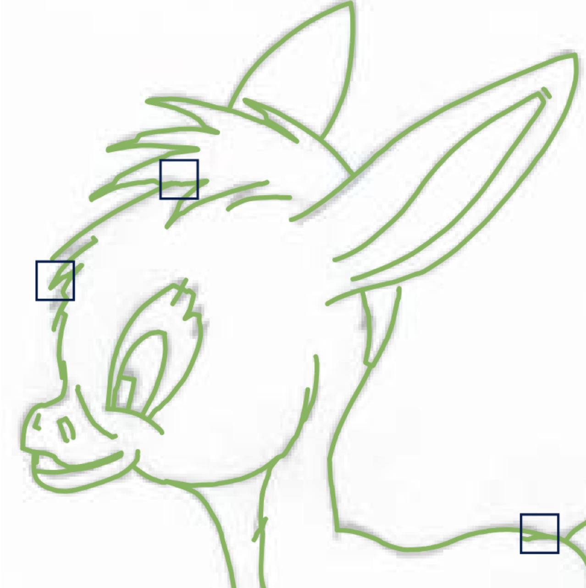

Loading About Me…

Rahul Mitra, Erick Jimenez Berumen, Megan Hoffman, Edward Chien
ACM SIGGRAPH 2024 Conference Papers

Olga Gutan*, Shreya Hedge*, Erick Jimenez Berumen, Mikhail Bessmeltsev, Edward Chien
Symposium on Geometry Processing 2023, Best Paper (Honorable Mention)
Loading Teaching…
email: erickjb [at] bu [dot] edu
Computer Science Department
Boston University
655 Commonwealth Ave.
Boston, MA
USA
Loading News…